1. Topo Esquerdo
Recursos (Madeira, Pedra, Alimentos)
A · D2 Original (R2)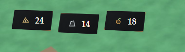
B · D2.1 Reprovada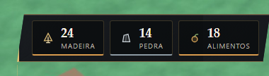
C · D2 Restaurada (Godot 4.7.2)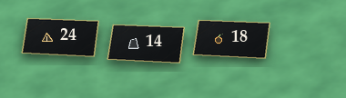
R2.1 divergiu: unificou em faixa única com 3 caixas e textos extras.
R2.2 recuperou: 3 pedras individuais escalonadas (+0/+7/+2 px), ícones originais e contadores 24/14/18 sem caixas internas.
2. Topo Direito
Placa de Ciclo, Velocidade & Menu
A · D2 Original (R2)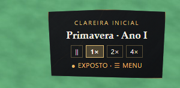
B · D2.1 Reprovada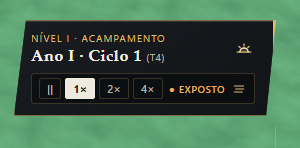
C · D2 Restaurada (Godot 4.7.2)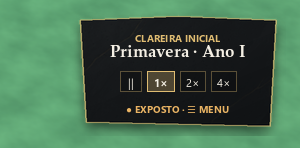
R2.1 divergiu: trocou por barra inclinada com bandeja interna.
R2.2 recuperou: silhueta original de topo em cumeeira (196×110), 4 botões de velocidade centralizados e ● EXPOSTO · ☰ MENU limpo.
3. Base Esquerda
Estelas dos Fundadores (Alden & Brena)
A · D2 Original (R2)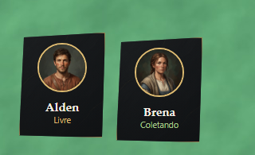
B · D2.1 Reprovada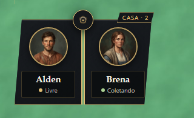
C · D2 Restaurada (Godot 4.7.2)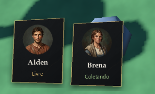
R2.1 divergiu: fundiu num díptico colado com coroa e caixas de nome.
R2.2 recuperou: 2 estelas independentes com vão de 14 px, Brena 6 px abaixo, retratos 62 px e nomes limpos sem moldura interna.
4. Base Direita
Maquetes (Alabastro) & Comandos
A · D2 Original (R2)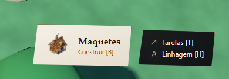
B · D2.1 Reprovada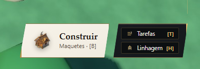
C · D2 Restaurada (Godot 4.7.2)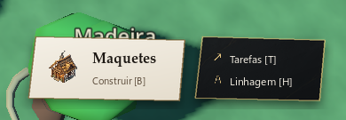
R2.1 divergiu: trocou Maquetes por Construir e pôs 2 caixas em Tarefas/Linhagem.
R2.2 recuperou: laje clara Maquetes / Construir [B] + laje escura com ícones ↗ e A, zero clipping.